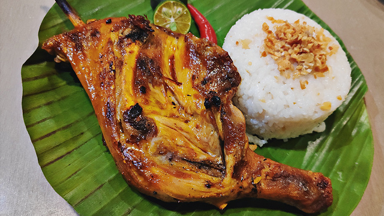
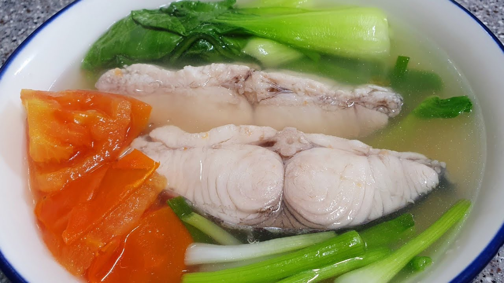
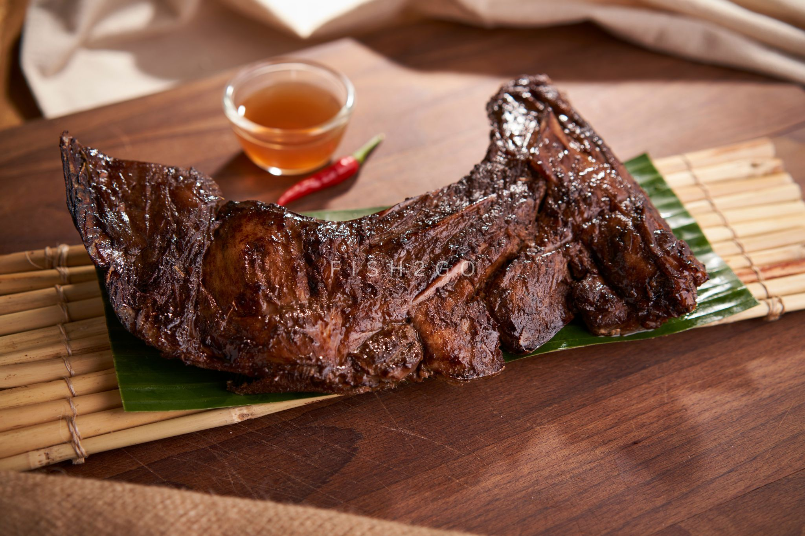

Spaghetti

- Filipino Spaghetti is the Pinoy version of Spaghetti with meat sauce. This version has a sweet tomato based sauce with lots of meat ingredients such as ground pork, luncheon meat, and hotdogs. It is often served during kid’s birthday parties along with some yummy fried chicken and cake.
Ingredients
- 200g (7 oz) spaghetti
- 200g (7 oz) ground pork or beef
- 1 medium onion, chopped
- 3 cloves garlic, minced
- 1/2 cup ketchup
- 1/4 cup tomato sauce
- 1/4 cup banana ketchup (optional, for extra sweetness)/li>
- 2 tablespoons soy sauce
- 1 tablespoon sugar (adjust to taste)
- 1/2 cup grated cheese (cheddar or processed cheese)
- 1/4 cup water
- Salt and pepper to taste
- Cooking oil
Instructions
- Cook the Spaghetti: Boil a large pot of salted water. Add the spaghetti and cook according to package instructions until al dente. Drain and set aside.
- Prepare the Sauce: In a large pan, heat a little oil over medium heat. Sauté the chopped onion until translucent. Add the minced garlic and cook for another minute.
- Cook the Meat: Add the ground pork or beef to the pan. Cook until browned and cooked through. Season with salt and pepper to taste.
- Make the Sauce: Add the ketchup, tomato sauce, and banana ketchup (if using) to the meat. Stir in the soy sauce and sugar. Mix well. Add a little water if the sauce is too thick. Simmer for about 5-10 minutes, allowing the flavors to meld together.
- Combine and Serve: Add the cooked spaghetti to the sauce and toss until well coated. Sprinkle grated cheese on top. Serve hot, and enjoy your Filipino-style spaghetti!
- Feel free to adjust the sweetness or saltiness according to your taste. Enjoy your meal!
- 250g (9 oz) ground pork (or a mix of pork and shrimp)
- 1 medium carrot, finely grated
- 1 medium onion, finely chopped
- 2 cloves garlic, minced
- 1/2 cup green onions, chopped
- 1 egg, beaten
- 1 tablespoon soy sauce
- 1 teaspoon salt/li>
- 1/2 teaspoon ground black pepper
- 1/4 cup flour (for binding)
- Lumpia wrappers (spring roll wrappers)
- Cooking oil (for frying)/li>
\
Lumpia shanghai

- Lumpia Shanghai is a smaller, meatier type of egg roll that we Filipinos are very proud of! You could use pork, beef, or both. It's a very easy and yummy recipe that's great as finger food. We serve these spring rolls with sweet and sour sauce, soy sauce with lemon, or banana ketchup.
Ingredients
Instructions
- Prepare the Filling: In a large bowl, combine the ground pork, grated carrot, chopped onion, minced garlic, and green onions. Add the beaten egg, soy sauce, salt, pepper, and flour. Mix everything together until well combined.
- Wrap the Lumpia: Lay out a lumpia wrapper on a clean surface, with one corner facing you. Place a small spoonful of the filling near the corner closest to you. Fold the sides of the wrapper over the filling, then roll it up tightly from the bottom corner. Seal the edge of the wrapper with a bit of water or a dab of flour paste (flour mixed with a little water).
- Heat the Oil: Heat oil in a deep frying pan or skillet over medium heat. You’ll need enough oil to submerge the lumpia, but not too much to make it difficult to manage.
- Fry the Lumpia: Carefully slide the wrapped lumpia into the hot oil, a few at a time, without crowding the pan. Fry until golden brown and crispy, about 3-5 minutes, turning occasionally for even cooking. Remove the cooked lumpia and drain on paper towels.
- Serve: Serve hot with your favorite dipping sauce, like sweet and sour sauce or a simple vinegar-based sauce.
- Enjoy your crispy, homemade Lumpia Shanghai!
- 500g (1 lb) pork belly or chicken (cut into bite-sized pieces)
- 250g (9 oz) green beans (sitaw), trimmed and cut into 2-inch pieces
- 1 medium onion, chopped
- 4 cloves garlic, minced
- 1/4 cup soy sauce
- 1/4 cup vinegar
- 1 cup water
- 1 tablespoon oil
- 1 bay leaf
- 1 teaspoon whole peppercorns
- 1 tablespoon brown sugar (optional, for a touch of sweetness)
- Salt and pepper to taste
- Prepare the Ingredients: Trim and cut the green beans into 2-inch pieces. Cut the pork belly or chicken into bite-sized pieces.
- Cook the Meat: In a large pan, heat the oil over medium heat. Sauté the chopped onion until translucent. Add the minced garlic and cook for about 1 minute
- Add the Meat: Add the pork or chicken to the pan. Cook until browned on all sides.
- Add the Seasonings: Pour in the soy sauce and vinegar. Let it simmer for about 2-3 minutes without stirring (to let the vinegar cook off its raw taste). Add the water, bay leaf, whole peppercorns, and sugar if using. Stir to combine.
- Simmer: Bring the mixture to a boil, then reduce the heat to low. Cover and let it simmer for about 30 minutes, or until the meat is tender.
- Add the Green Beans: Add the green beans to the pan. Stir and cook for another 5-10 minutes, or until the beans are tender but still crisp.
- Season and Serve: Taste and adjust seasoning with salt and pepper if needed. Serve hot with steamed rice.
- 1 kg (2.2 lbs) chicken (leg quarters or thighs, skinless)
- 1/4 cup vinegar
- 1/4 cup soy sauce
- 1/4 cup calamansi juice (or lemon/lime juice as a substitute)
- 1/4 cup oil (vegetable or canola)
- 1 tablespoon brown sugar
- 1 tablespoon minced garlic
- 1 tablespoon minced ginger
- 1 teaspoon salt
- 1 teaspoon ground black pepper
- 2-3 bay leaves
- Bamboo skewers (soaked in water for 30 minutes) or grill rack
- Prepare the Marinade: In a bowl, mix together the vinegar, soy sauce, calamansi juice, oil, brown sugar, minced garlic, minced ginger, salt, pepper, and bay leaves.
- Marinate the Chicken: Add the chicken pieces to the marinade, ensuring they are well coated. Cover and marinate in the refrigerator for at least 1 hour, or overnight for best results
- Prepare for Grilling: Preheat your grill to medium-high heat. Thread the marinated chicken pieces onto bamboo skewers, if using. Alternatively, you can place them directly on the grill rack.
- Grill the Chicken: Grill the chicken for about 5-7 minutes on each side, or until fully cooked and has a nice char. Baste with the remaining marinade during grilling to keep the chicken moist and flavorful.
- Serve: Remove from the grill and let rest for a few minutes. Serve with steamed rice and your favorite side dishes.
- 500g (1 lb) pork belly or pork shoulder, cut into bite-sized pieces
- 1 medium onion, chopped
- 4 cloves garlic, minced
- 1/4 cup soy sauce
- 1/4 cup vinegar
- 1 cup water
- 2 bay leaves
- 1 teaspoon whole peppercorns
- 1 tablespoon brown sugar (optional, for a touch of sweetness)
- 2 tablespoons oil
- Salt and pepper to taste
- Prepare the Meat: Cut the pork into bite-sized pieces.
- Sauté Aromatics: Heat oil in a large pan over medium heat. Sauté the chopped onion until translucent. Add the minced garlic and cook for another minute.
- Cook the Pork: Add the pork pieces to the pan. Cook until browned on all sides.
- Add Seasonings: Pour in the soy sauce and vinegar. Stir and let it simmer for about 2-3 minutes (this helps cook off the raw vinegar taste).
- Simmer: Add the water, bay leaves, and whole peppercorns. Stir to combine. Bring the mixture to a boil, then reduce the heat to low. Cover and simmer for about 30-40 minutes, or until the pork is tender.
- Adjust Seasoning: If using, stir in the brown sugar to add a touch of sweetness. Taste and adjust seasoning with salt and pepper as needed.
- Serve: Serve hot with steamed rice.
- 3 medium eggplants (preferably the long, slender variety)
- 3 large eggs
- 1/2 cup ground pork or beef (optional)
- 1 small onion, finely chopped
- 2 cloves garlic, minced
- 1 medium tomato, diced
- 1/4 cup chopped green onions or parsley
- Salt and pepper to taste
- Cooking oil
- Prepare the Eggplants: Roast the eggplants over an open flame or under a broiler, turning occasionally, until the skin is charred and the flesh is soft. This usually takes about 10-15 minutes. Allow the eggplants to cool, then peel off the charred skin. Gently flatten the flesh with a fork or spoon to form a rough, flat layer./li>
- Cook the Meat (Optional): If using ground pork or beef, heat a little oil in a pan over medium heat. Sauté the chopped onion and minced garlic until fragrant. Add the ground meat and cook until browned and cooked through. Add diced tomato and cook for a few more minutes. Season with salt and pepper. Set aside.
- Prepare the Egg Mixture: In a bowl, beat the eggs and season with a bit of salt and pepper. Stir in the chopped green onions or parsley.
- Assemble and Cook: Heat a little oil in a non-stick frying pan over medium heat. Dip each flattened eggplant in the egg mixture, ensuring it’s well-coated. Place the eggplants in the hot pan and cook for about 2-3 minutes on each side, or until golden brown and cooked through. If you’re using ground meat, you can place some on top of the eggplants before flipping them.
- Serve: Serve hot with steamed rice or as a side dish.
- 1 cup rice (preferably jasmine or any short-grain rice)
- 4 cups water or chicken broth
- 1 small onion, chopped
- 3 cloves garlic, minced
- 1 tablespoon ginger, minced
- 1 tablespoon cooking oil
- 1 chicken breast or thigh, cut into bite-sized pieces (optional)
- 2-3 tablespoons fish sauce or salt to taste
- Pepper to taste
- Toppings (optional): chopped green onions, toasted garlic, hard-boiled eggs, calamansi or lemon wedges, soy sauce
- Prepare the Rice: Rinse the rice under cold water until the water runs clear. This helps remove excess starch.
- Sauté Aromatics: In a large pot, heat the oil over medium heat. Sauté the chopped onion until translucent. Add the minced garlic and ginger, cooking until fragrant.
- Add Chicken (Optional): If using chicken, add it to the pot and cook until it is no longer pink.
- Cook the Rice: Add the rinsed rice to the pot and stir for a couple of minutes to coat the rice with the aromatics.
- Add Liquid: Pour in the water or chicken broth. Stir well and bring to a boil.
- Simmer: Reduce the heat to low and simmer, uncovered, for about 30-40 minutes, or until the rice is soft and the mixture has thickened to a porridge-like consistency. Stir occasionally to prevent sticking.
- Season: Season with fish sauce or salt and pepper to taste. Adjust seasoning as needed.
- Serve: Ladle the lugaw into bowls and top with your choice of garnishes like chopped green onions, toasted garlic, hard-boiled eggs, and a squeeze of calamansi or lemon. Serve with soy sauce on the side if desired.
- 500g (1 lb) fish (such as bangus/milkfish, tilapia, or any firm white fish), cut into pieces
- 1 tablespoon cooking oil
- 1 medium onion, chopped
- 3 cloves garlic, minced
- 1 thumb-sized ginger, sliced into thin strips
- 1-2 tablespoons fish sauce or salt to taste
- 4 cups water or fish stock
- 1 medium green papaya or chayote, peeled and cut into chunks (optional)
- 1-2 cups leafy greens (such as spinach or malunggay)
- 1-2 pieces long green chili (optional, for a bit of heat)
- Pepper to taste
- Prepare the Fish: Rinse the fish pieces under cold water and set aside.
- Sauté Aromatics: Heat the oil in a large pot over medium heat. Sauté the chopped onion until translucent. Add the minced garlic and ginger, and cook until fragrant.
- Add Liquid: Pour in the water or fish stock and bring to a boil.
- Add Fish: Gently add the fish pieces to the pot. Season with fish sauce or salt and pepper to taste.
- Add Vegetables: If using, add the green papaya or chayote. Simmer until the vegetables are tender, about 5-10 minutes.
- Add Greens: Stir in the leafy greens and cook for an additional 2-3 minutes until they are wilted.
- Adjust Seasoning: Taste and adjust the seasoning with more fish sauce, salt, or pepper if needed.
- 500g (1 lb) tuna panga (jaw or cheek), cleaned and patted dry
- 3 tablespoons soy sauce
- 2 tablespoons calamansi juice or lemon juice
- 2 cloves garlic, minced
- 1 tablespoon ginger, minced
- 1 tablespoon cooking oil
- Salt and pepper to taste
- 1-2 tablespoons chopped green onions or parsley for garnish (optional)
- Lemon or calamansi wedges for serving
- Marinate the Tuna: In a bowl, combine the soy sauce, calamansi or lemon juice, minced garlic, and minced ginger. Season with salt and pepper to taste. Add the tuna panga and marinate for at least 30 minutes in the refrigerator.
- Prepare for Cooking: Heat the oil in a large pan or grill over medium heat.
- Cook the Tuna Panga: If using a pan: Add the marinated tuna panga to the pan and cook for about 4-5 minutes on each side, or until cooked through and nicely browned. If grilling: Place the marinated tuna panga on the grill and cook for about 4-5 minutes on each side, or until grilled to your desired doneness.
- Garnish and Serve: Once cooked, remove from heat and let it rest for a few minutes. Garnish with chopped green onions or parsley if desired. Serve with lemon or calamansi wedges on the side.
Adobong Sitaw
- Adobong Sitaw is a vegetable dish composed of string beans cooked adobo style. As you might have noticed, almost all ingredients can be cooked using the famous adobo style – be it meat or vegetables. Chicken Adobo, Pork Adobo, Adobong Kambing, and Adobong Pusit are just few of the adobo dishes that we have featured – so far
Ingredients
Instructions
Chicken Inasal
- The best I can describe the taste of chicken inasal is a combination of smoky, tangy, and aromatic, with a hint of sweetness from the marinade and basting sauce.
Ingredients
Instructions
Pork Adobo

- Adobo is really a kind of cooking method, originating in the Philippines. IT involves simmering meat and even seafood in a mixture of vinegar, soy sauce, and garlic.
Ingredients
Instructions
Eggplant Torta

- Tortang talong is a staple dish found in every Filipino household. This simple omelet dish is perfectly tender and budget-friendly!
Ingredients
Instructions
Lugaw
- Lugaw is one of the many variants of rice dishes in the Philippines. This is a plain rice porridge flavored with aromatics and topped with toasted garlic, scallions, and a boiled egg.
Ingredients
Instructions
Tinolang Isda
- Experience the comforting flavors of Tinolang Isda, a traditional Filipino fish soup infused with ginger broth. Dating back to the pre-colonial era, this dish showcases the Philippines' rich culinary heritage and love for fresh and nourishing flavors, making it a staple in Filipino households and gatherings.
Ingredients
Instructions
Tuna Panga
- Inihaw na panga ng tuna is a Filipino grilled dish made with tuna jaw marinated in a mixture of soy sauce, calamansi juice, garlic, and spices. The marinated tuna jaw is then grilled until tender and charred, resulting in a smoky and flavorful dish. It is commonly served with steamed rice and a dipping sauce made with soy sauce, calamansi juice, and chili peppers.